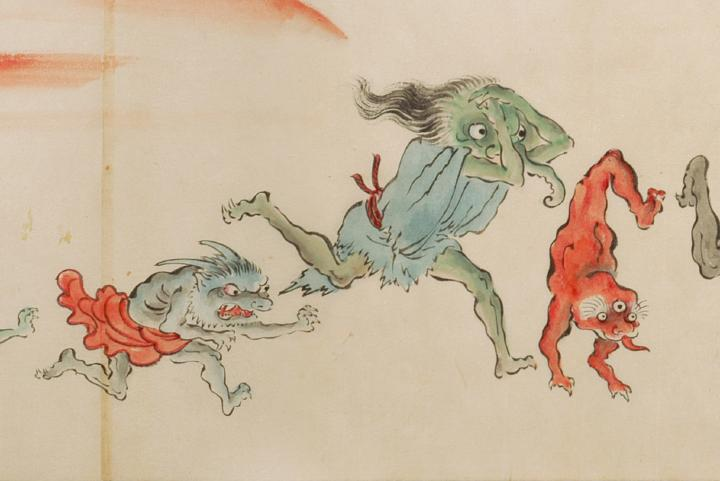

出現した朝日から逃げる化物。画面右には足が一本で肌が赤く三つ目で、逆立ちをして逃げている化物。中央には、ボロを着て象のような長い鼻をもち、頭を抱えている化物。左には、2本の角を生やし鋭い牙をもった獣のような化物がいる。
出典：親書誌：U426_nichibunken_0053：化物婚礼絵巻；バケモノコンレイエマキ／日付：2006／資源識別子：U426_nichibunken_0053_0025_0000
Copyright (c)2010- International Research Center for Japanese Studies, Kyoto, Japan. All rights reserved.